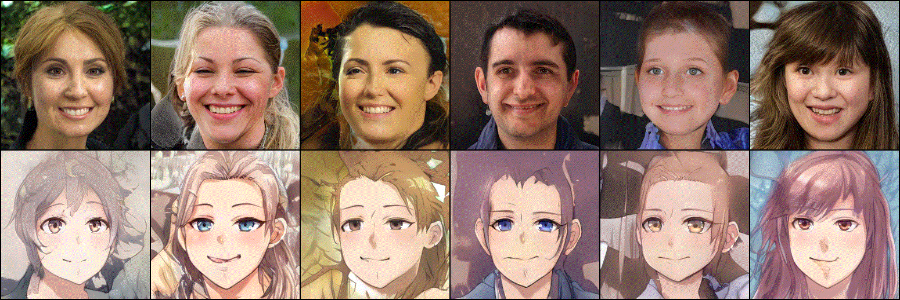

AR Interior Designer Android App
March 2022 - April 2022- Android AR Application made using Unity game engine and ARCore toolkit.
- Provides easy-to-use drag and drop UI for user to place furnitures.
- Integrated AR Cloud Anchors into app to create a shared AR experience across multiple devices.
- The AR Cloud Anchors made use of Firebase realtime database to store Cloud Anchors ID.

Face Cartoonization using Generative Adversarial Network
May 2021 - May 2022- Fine-tuning StyleGAN2 architecture to perform image to image translation.
- Done pre-processing and face alignment to remove poor quality training images.
- Designed and implemented a feature-based multi-discriminator architecture.
- Adopt transfer learning technique to reduce training time and computational cost.
- Employ closed-form factorisation to perform image editing.
- Make use of Knowledge Distillation to perform model compression.
- Some samples:

RPI Card Detection
Aug 2021 - Oct 2021- Card detection and idendification tasks.
- Overall objective was to have a semi-autonomous robot travel the arena and stop infront of designated obstacles for card identification.
- Trained a model via transfer learning to detect a small pool of cards with characters printed on them
- Performed Image augmentation to increase dataset size, prevent overfitting and ensure model performs well under different lighting conditions.
- Export model as tensor-flow lite model to have it run on the Raspberry Pi.
- Communicate labels to an external Android device via bluetooth accomplish overall tasks.
- Card Detection examples:

Face Recognition Attendance Taking System
Jan 2021 - May 2021- Setup back end api endpoints to provide services to front end flutter application.
- Interfaced with AWS Rekognition service to provide face recognition functionality to attendance taking system.
- Wrote basic api documentation for front-end developers to easily connect the front end application with the backend.
Map.sg
Aug 2020 - Nov 2020- Turn-by-turn driving companion with localised information
- Provide live traffic images where available.
- Tracks history of routes taken by the user and allows bookmarking to save frequent routes.
- Built with ReactJS (with Redux state management) and Material-UI framework.
- Authentication and hosting handled by firebase.
- Visit: https://cz2006-4bb77.web.app/
SPade
Apr 2016 – Aug 2016- Developed as part of a Final Year Project in Singapore Polytechnic.
- Full name stands for SP Web Auto Grading System.
- Platform which serves to allow lecturers to design and set programming assignment questions.
- Users would upload completed script to be compiled and have its output verified against test cases set by lecturers.